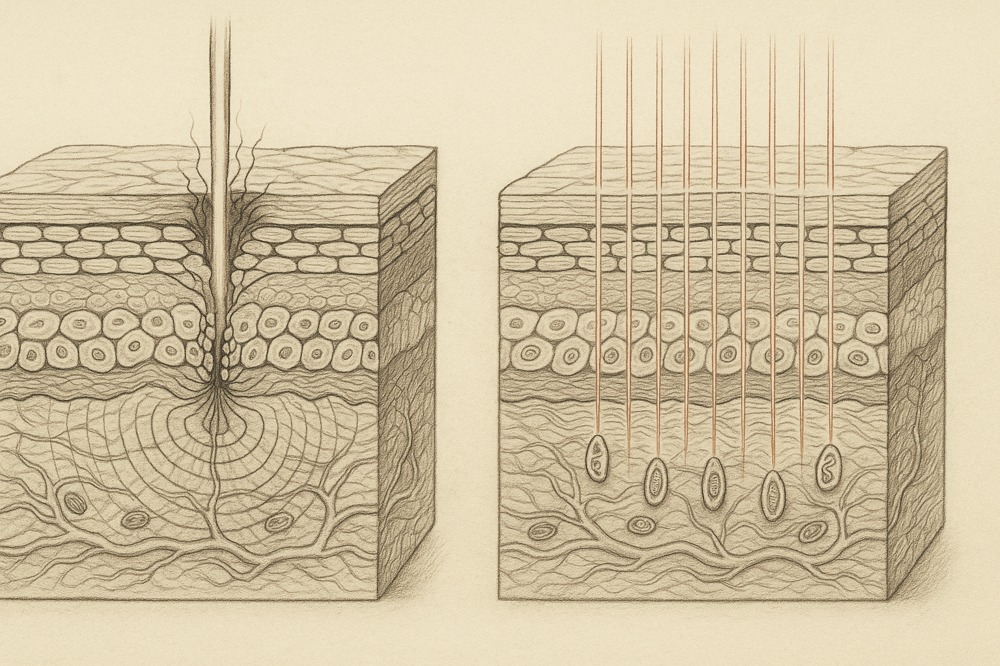
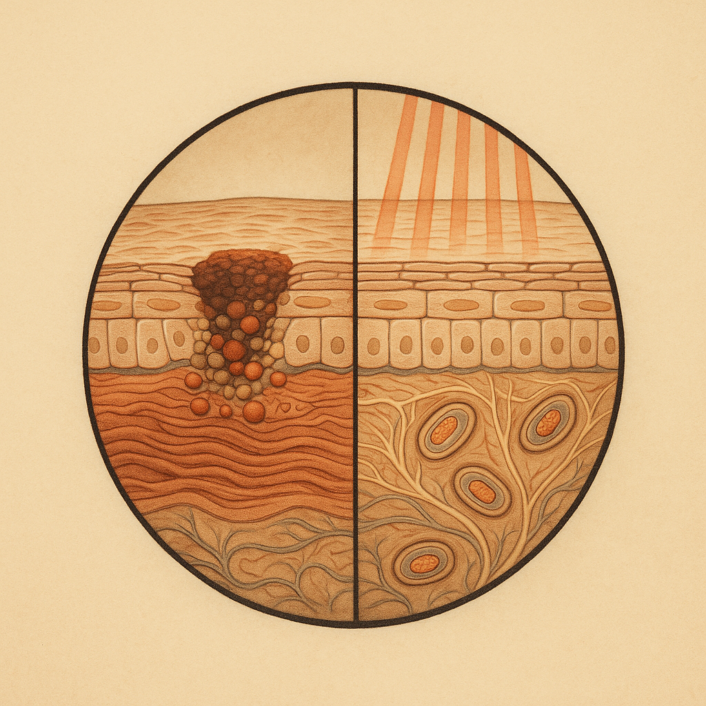
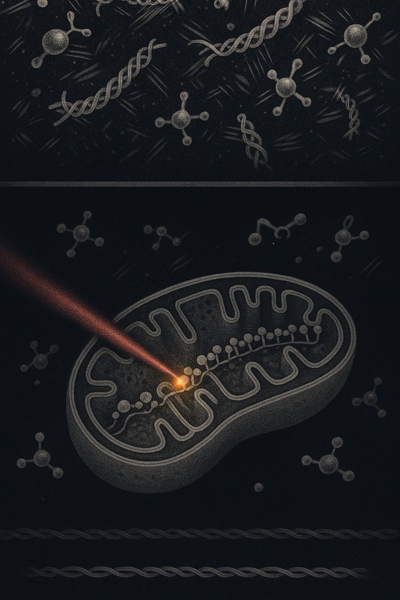

Review below. Reply approve to publish the Facebook post, or tell me edits.

Skin devices get ranked like rungs on a ladder. Laser at the top, IPL below it, radiofrequency in the middle, an LED mask down the bottom: the beginner option, the one you buy when you cannot afford the real thing.
That ladder does not exist. There are two entirely different families of device here, and they do fundamentally different things to your skin. Once you can see the split, everything else (the price, the redness, the timeline, the promises) starts making sense.
No. And it is not a weaker version of one either.
A laser is a tightly focused, high-intensity beam of a single wavelength, concentrated on a small area with enough energy density to physically change tissue. An LED mask spreads low-intensity light across your whole face at once, at levels that do not damage anything.
Same ingredient (light). Different job entirely. Comparing them is closer to comparing a blowtorch with a window than comparing two grades of the same tool.
Here is the part the industry rarely says plainly.
Lasers, IPL, radiofrequency, chemical peels and microneedling all belong to one family, and that family works by controlled injury. They deliver energy (light, heat, acid, tiny needles) densely enough to heat, ablate or wound skin on purpose. That is not a bug. That is the design.
Your skin then does what skin does when injured. It clears damaged tissue, ramps up collagen production, rebuilds. The repair is the result. You are not buying the beam. You are buying the healing that follows it.
Which is exactly why these treatments come with redness, peeling, a week of hiding, a trained clinician and a consent form. The downtime is not an unfortunate side effect bolted onto an otherwise gentle procedure. It is the mechanism, visible on your face.
Done well, by someone who knows what they are doing, that trade can be absolutely worth it. Real change, fast. We are not here to talk you out of it.
The second family works by signal, not injury.
LED masks emit visible light at specific wavelengths. Ours run three primaries: 630 nm red, 520 nm green and 460 nm blue, combined into seven colours across 309 emission points (70 chips on the face piece, 33 on the neck). That light is spread thinly across a large surface at low energy density. It is absorbed, and it appears to gently nudge normal cell activity over time. That is the whole mechanism in a sentence, and we have covered it properly elsewhere, so we will leave it there.
The useful analogy is a controlled burn versus daylight falling on a leaf.
Both are light plus energy. One destroys structure on purpose so something new can grow from the ash. The other is quietly absorbed and put to work, changing nothing you can see today. A leaf in the sun is not a leaf being repaired. It is a leaf running its ordinary business, slightly better resourced.
Nothing is burnt. Nothing is ablated. There is no wound, so there is no repair cascade to ride, and no dramatic before-and-after in a fortnight.
While we are being straight with you: this mask is visible-light LED only. No dedicated near-infrared, which means it does not reach the deeper, warmer end of the spectrum some devices use. We would rather tell you that ourselves than have you find it later and wonder what else we skipped.
It should feel like almost nothing. Ten minutes of light, then you get on with your evening.
Some people notice mild warmth. That warmth is a by-product of the electronics and the light, not the thing doing the work. If a home LED device is meaningfully heating your skin, that is a fault, not a feature, and worth taking seriously.
There are genuine considerations: photosensitising medication, certain skin conditions, eye comfort. Those deserve proper space rather than a throwaway line, so we have covered them on the blog. Read that first if any of it might apply to you.
Here is the trade the category prefers you not to notice.
"No downtime" is not a bonus feature we bolted on. It is a receipt. It tells you exactly what the device is and is not doing to your skin. A device that visibly transforms your face in a single session is a device that damaged it on purpose and then charged you for the healing.
LED does not do that. Which is precisely why it is gentle enough for ten minutes a day, and precisely why it is slow, cumulative and modest.
You do not get to have both. Anyone selling you clinic-grade transformation with zero downtime is selling you a contradiction.
Realistically, with consistency: glow and more even-looking tone tend to show around the 7 to 10 day mark. Softened-looking fine lines, if they come, sit closer to 4 to 8 weeks. Not days. Not a weekend.
It depends what you are trying to buy.
If you want one significant, visible change and can take a week of looking like you fell asleep in the sun, book the clinic. An LED mask is not competing for that job and will not win it.
LED is the maintenance layer. Closer to flossing or sunscreen than to a facelift: small, unglamorous, done consistently, paying off quietly over months. Plenty of people do both, because they are not substitutes. They are different tools, and we would rather you spent correctly than spent with us.
And to be clear, our mask is a cosmetic device, not medicine. It does not treat or cure any skin condition, and we are not going to pretend otherwise. Redermis is also new. We do not have a wall of reviews yet, and we are not going to invent any.
If you have read all of that and decided the slow, gentle layer is the one you actually want, ours is here, currently $99 as a test price. Everything above is what you should judge it against.

Every LED mask ad brags about "no downtime". Nobody explains that no downtime is the trade-off, not the perk.
Two very different families of device get sold on the same shelf, and the difference is not power. It is whether the thing is designed to injure you.
Lasers, IPL and peels deliver energy densely enough to wound skin on purpose. The healing IS the result. That is why they work fast, and why you hide indoors for a week afterwards.
LED at visible wavelengths does not wound anything. Nothing is burnt, nothing is ablated, so there is no repair cascade to ride and no overnight transformation to post about.
Think of a kettle and a radio transmitter. Both run on energy. One heats. One carries a signal. LED belongs to the second category, and a device in the second category will never do what a device in the first one does.
So: no downtime is the receipt. It is proof the mechanism is gentle, which is exactly why it is slow. It supports skin over weeks, visibly, quietly. It is a cosmetic device, not medicine.
Our honest limit: our unit is visible light with no dedicated near-infrared, so it works at the surface layers, not deep. And Redermis is new. No wall of reviews yet, and we will not invent any.
If anyone ever sells you laser results with zero downtime, they are selling you a contradiction. If the slow, gentle layer is the one you want, the mask and the full spec are here: https://redermis.com.au/products/medical-grade-silicone-7-wevelenghts-photon-led-mask-face-and-neck-red-light-therapy-flexible-facial-mask-repair-skin-wireless-use
**Hashtags:** #skinlongevity #ledlighttherapy #skincarescience #redermis

No downtime is not a feature. It is a confession.
Lasers, IPL and peels work by hurting your skin on purpose.
The healing is the result. The downtime is the invoice.
LED injures nothing. Nothing burnt. Nothing ablated.
So no repair cascade. No dramatic reveal in a fortnight.
Ten minutes. No wound. No drama.
Demolition versus watering.
One changes the building in a day. One changes the garden over a season.
Only one of them lets you go to work tomorrow.
Gentle enough for daily use is the same sentence as slow enough to need weeks.
Cosmetic device, not medicine. It supports skin and helps it visibly even out, gradually. Ours is visible light, no dedicated near-infrared.
Redermis is new. We have no wall of reviews and we are not inventing any.
Working out which family of device you actually need is the right first step. Full spec is in our bio, whenever you want to hold ours up against everything above.
**Hashtags:** #ledmask #redlighttherapy #skinlongevity #skinbarrier #skincarescience #skintok #australianskincare #skincarehonesty #nodowntime #glowslowly
**Title:** LED Face Mask vs Laser and IPL: Why Red Light Therapy at Home Has No Downtime
**Description:** Lasers, IPL and peels work by causing controlled damage, so your skin has to repair itself. That is why they sting, flake and need downtime. An LED face mask does something different: it is light, not heat, so it does not injure the skin at all. It gently signals cells to do more of their own repair, which is exactly why red light therapy at home has no downtime, and also the honest ceiling on it. No wound, no dramatic overnight change. Gradual and consistent, closer to sunscreen than to a resurfacing treatment. Ten minutes a day, repeated. If you want a closer look at the mask, it is here: https://redermis.com.au/products/medical-grade-silicone-7-wevelenghts-photon-led-mask-face-and-neck-red-light-therapy-flexible-facial-mask-repair-skin-wireless-use
**Hashtags:** #RedLightTherapy #LEDFaceMask #SkincareScience #SkinLongevity #AtHomeSkincare